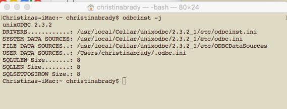
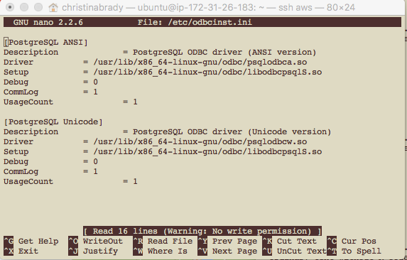
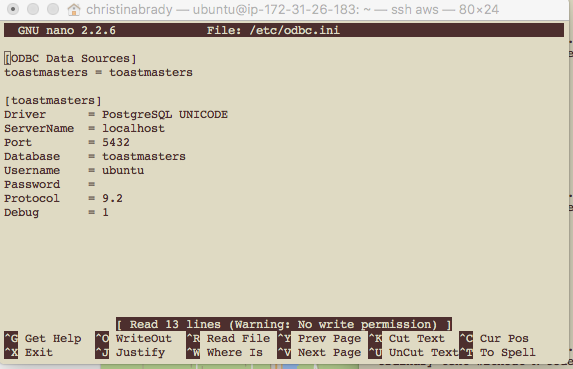
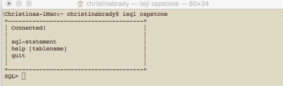

- Setting up your DB
- Connecting to it via R
- Calling from and saving to your DB from Shiny
Christina Brady
Data Scientist, World Bank
Give yourself ownership of the /usr/local folder again
Install via homebrew
Create a data directory and give proper permissions
Start the server
This is all in the Terminal
# give yourself ownership of /usr/local
sudo chown $(whoami):admin /usr/local && sudo chown -R $(whoami):admin /usr/local
# update homebrew and install Mongo
brew update && brew install mongodb
# create data directory
mkdir -p /data/db
sudo chown -R `id-un` /data/db
# start the server
mongod
Install via apt-get
Start the server
This is also in the Terminal
# get a public key from MongoDB
sudo apt-key adv --keyserver hkp://keyserver.ubuntu.com:80 --recv 7F0CEB10
echo "deb http://repo.mongodb.org/apt/ubuntu "$(lsb_release -sc)"/mongodb-org/3.0 multiverse"
# update apt-get and install Mongo
sudo apt-get update
sudo apt-get install -y mongodb
# pin the current version so that it doesn't auto-update
echo "mongodb hold" | sudo dpkg --set-selections
echo "mongodb-server hold" | sudo dpkg --set-selections
# Start the server
sudo service mongodb start
In Terminal (if necessary)
sudo apt-get libssl-dev
sudo apt-get libsas12-dev
In R
install.packages(c("jsonlite", "mongolite"))
library(jsonlite)
library(mongolite)
In db_connection.R
m <- mongo(collection = "dbname")
In global.R
library(jsonlite)
library(mongolite)
source("db_connection.R")
data_for_shiny <- m$find()
distinct_data <- m$distinct("name")
In ui.R
In server.R
in ui.R
actionButton(inputId = "save", label = "Save")
in server.R
observeEvent(input$save, {
newrecipe <- list()
newrecipe[["name"]] <- input$name
newrecipe[["ingredients"]] <- input$ingredients
newrecipe[["instructions"]] <- input$instructions
newrecipe[["tags"]] <- input$tags
m$insert(toJSON(newrecipe))
})
In Terminal:
cd path/to/psqlodbc-09.06.0200/
./configure
make
sudo make install
Install Driver Manager (in Terminal)
brew update && brew install unixODBC
In Terminal:
sudo apt-get install unixODBC unixODBC-dev
sudo apt-get install odbc-postgresql
In Terminal
odbcinst -j
Once you find them
sudo nano path/to/odbcinst.ini
sudo nano path/to/odbc.ini
Once everything is set up
isql -v dbname db_username db_password
Find ODBC Files

odbninst.ini

odbc.ini

isql

In Terminal
R CMD INSTALL path/to/RODBC...tar.gz
In Terminal
sudo apt-get install r-cran-rodbc
In R
library(RODBC)
odbcDataSources()
db <- odbcConnect("dbname")
In db_connection.R
library(RODBC)
dbobject <- odbcConnect("dbname", uid = "userid", pwd = "password")
In global.R
source("db_connection.R")
shiny_data <- sqlQuery(dbobject, "SELECT col1, col2, col3 FROM dbname WHERE col1 = 'x'")
In ui.R
In server.R
in ui.R
actionButton(inputId = "save", label = "Save")
in server.R
observeEvent(input$save, {
attendance <- data.frame(
meeting_date = Sys.Date(),
role = input$role,
member = input$name)
sqlSave(dbobject, attendance, "dbattendance", append = TRUE, varTypes = c(meeting_date = "date", role = "varchar", member = "varchar"), colnames = FALSE, rownames = FALSE)
)
})